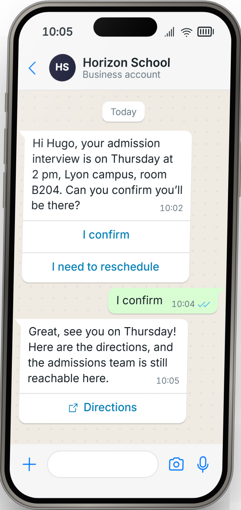
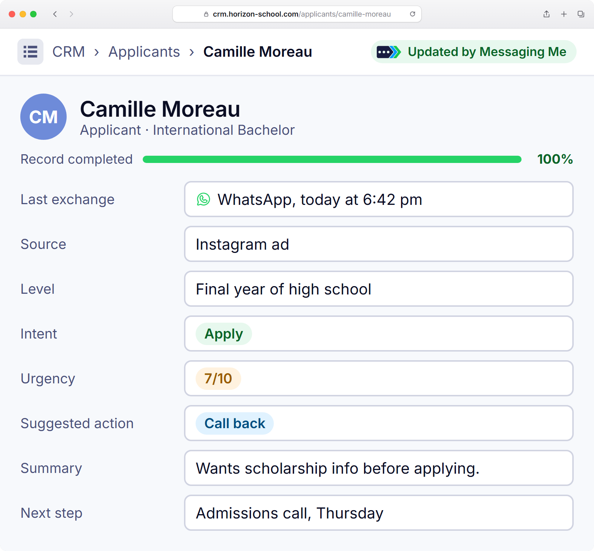

The guide to turning every spark of interest into a conversation, and every conversation into an application.
In this guideUnderstanding the APIThe strategyClick-to-WhatsAppCRM & follow-upsAI, then humansWhat doesn’t work

app.messagingme.frSimply conversational.
ForewordRecruiting on WhatsApp
Your applicants are on WhatsApp. Your school can meet them there, as long as it’s useful.
Months go by between a student fair and an enrollment. During those months, your emails get lost between two newsletters and your calls go to voicemail. Your applicants, meanwhile, open WhatsApp dozens of times a day.
WhatsApp has become the place where people talk about their studies: with friends, with parents, and more and more with schools. Applicants are ready for it: 83% of people in France say they are open to messages from businesses, when those messages are relevant.
That is the condition: relevant. This guide won’t teach you to send more messages. It teaches you to send the right one, at the right time: when an applicant has just downloaded a brochure, signed up for an open day, or been shortlisted. Then to keep the conversation going, with your AI, your teams and your ambassadors.
One useful message at the right time beats ten campaigns.
The Messaging Me teamConversational consulting, platform and support
Contents
01Understanding WhatsApp03
02The API account, piece by piece04
03The numbers05
04The strategy: one goal per conversation06
05The right moment, the right value07
06Acquiring with Click-to-WhatsApp08
07They’re already doing it09
08CRM automation10
09Starting without a CRM11
10Following up without pestering12
11AI first, humans next13
12What doesn’t work14
✓Your getting-started checklist15
Messaging Me · White paper 2026
02
01 · Understanding WhatsAppRecruiting on WhatsApp
01
Three WhatsApps. Only one recruits at scale.
Same logo, same green bubble, three very different tools. Before launching an admissions campaign, you need to know which one connects to your CRM, your ads and your teams, and which one stops at an advisor’s phone.
App
WhatsApp
for individuals
The everyday app, between friends and family
No verified business name
Nothing connects to your tools
One phone, one person
App
WhatsApp Business
for small teams
Free, with quick replies and labels
The applicant sees a number, not the school’s name
Broadcasts limited to contacts who saved your number
No link with your CRM: no scale, no automation
The one you need
Platform
WhatsApp Business API
for recruiting at scale
Campaigns to thousands of applicants who opted in
Connected to your CRM, your forms and your ads
The whole admissions team on one number, with AI answering first
Writing first takes a Meta-approved template, billed per message
How it works
You write first? It’s a template message, approved by Meta before it’s sent.
The applicant replies? A 24-hour window opens for free-form conversation, with your team or your AI.
Key takeaways
The Business app helps out a small team; it can’t carry a recruitment campaign.
Only the API connects to your CRM and talks to thousands of applicants.
An approved template to open, then 24 hours of free-form conversation after each reply.
Messaging Me · White paper 2026
03
02 · The API accountRecruiting on WhatsApp
02
What it takes to write to thousands of applicants.
You don’t buy the WhatsApp Business API like an app: it’s opened with Meta, in your school’s name. Four pieces, and an optional fifth: the blue tick.
1
A Meta Business portfolio
Your school’s business account with Meta (business.facebook.com). Get it verified: business verification is what unlocks sending at scale.
2
A dedicated number
A free number, not already used in the WhatsApp app. Or the one of your WhatsApp Business app, which can stay there.
3
A display name
Your school’s name, as the applicant reads it at the top of the conversation. Meta reviews and approves it.
4
A payment method
Meta bills each message, according to its category. Without a payment method, templates are blocked. Your bank card, or Messaging Me can pay and advance your fees.
Messaging limits: you start at 250 and climb fast.
Number of different contacts you can reach per 24 hours, not counting replies in an open conversation.
250
2,000
10,000
100,000
Unlimited
New portfolio
After business verification
Automatic upgrade: quality messages, and half the tier used over 7 days
The blue tick
HS
Horizon School
Official business account
Illustration
It marks an official account, next to the name. Meta grants it on request, after review: 30 days on the platform, a verified portfolio, two-factor authentication and an approved display name.
Not required to start your campaigns.
Key takeaways
Verify your business with Meta from day one: that’s what takes you from 250 to 2,000.
A number dedicated to the school, never an advisor’s cell phone.
The blue tick is a bonus, not a prerequisite.
Source: Meta, WhatsApp Business Platform documentation (“Messaging limits”, “Official Business Accounts”), October 2026.
Messaging Me · White paper 2026
04
03 · The numbersRecruiting on WhatsApp
Your applicants are here. Waiting for a useful message.
No.1
WhatsApp, the world’s strongest brand in 2026.1
Index score 41.5, ahead of Samsung (41.4).
56M
WhatsApp users in France.2
891
app opens per user per month: nearly 30 a day.5
Demand is ahead of the brands.
83%
of people in France are open to relevant messages from businesses3
50%
of businesses believe it3
96%
read rate.
×4.5
more clicks for Air France on WhatsApp than by email.4
24 h
of free-form conversation after each applicant reply.
Sources. 1. YouGov, Best Brand Rankings 2026, BrandIndex scores from January 1 to December 31, 2025 (article of February 9, 2026). 2. Meta, 2026. 3. Kantar survey for Meta, cited in the BCG and Meta study of April 9, 2026. 4. BCG and Meta study, April 9, 2026. 5. Meta, Top Trends 2026 (891 opens per month).
05
04 · The strategyRecruiting on WhatsApp
04
Before you write, set the goal.
A conversation without a goal stops at the first “thanks”. Each message serves one intent, and only one: it decides the text, the button, who takes over and what you’ll measure.
The goalThe buttonWhat happens nextThe metric
1Book a meetingAdmission interview, campus visit, call with an advisor.
Pick a time slot
The meeting goes into the team’s calendar; the reminder arrives the day before.
Meetings booked, attendance
2Hand over to a personA complex application, funding, an international applicant.
Talk to an advisor
The conversation reaches the team or an ambassador, with its full history.
Time to pick up, conversations handled
3Send to your websiteThe online application, the program page, uploading a document.
Submit my application
A follow-up goes out if the application isn’t completed.
Clicks, applications submitted
4Sign up for an eventOpen day, webinar, taster day.
Sign me up
The confirmation, the reminder the day before, directions or the webinar link.
Sign-ups, attendance
5Qualify to guideLevel of study, target program, campus, funding.
High schoolUndergraduate
The applicant goes down the right path, and their CRM record fills itself in.
Records completed, split by program
The ruleOne message, one goal, one button.
Key takeaways
Write down the goal before writing the message.
A single main button: the one for the goal.
Decide in advance who takes over, and how you’ll know it worked.
Messaging Me · White paper 2026
06
05 · What worksRecruiting on WhatsApp
05
The right moment. Or something of real value.
A WhatsApp message that works answers one of two questions: what has the applicant just done? What can I give them? If it answers neither, it doesn’t go out.
Follow something the applicant did
They download a brochure
Here’s the Bachelor brochure. Any question about the program or admissions?
They sign up for an open day
Your place is booked for Saturday at 10 am. Shall we send you directions the day before?
Their application is incomplete
Your transcript is missing: you can upload it here, in two minutes.
They’re shortlisted
Congratulations! Here’s how to prepare for your interviews, and who can answer your questions.
They’re admitted
Welcome! The three steps to finalize your enrollment.
Bring something valuable
Resend the brochure
The one they downloaded, on the channel they actually open.
Invite
Open day, webinar, taster day: one invitation, a one-tap reply.
Share exclusive content
A student testimonial, a campus video, a guide like this one.
Remind them of a deadline
The application deadline, the interview time, the first day of classes.
200+
attendees at the webinar NEOMA promoted on WhatsApp to its shortlisted applicants: an invitation at the right moment, a one-tap reply. Customer case presented by Messaging Me, May 2026.
Key takeaways
Every message follows an action by the applicant, or brings something.
It says why it’s arriving now.
It ends with a question or a button: you expect a reply.
Messaging Me · White paper 2026
07
06 · Click-to-WhatsAppRecruiting on WhatsApp
06
Acquire: from ad to conversation, in one tap.
A Click-to-WhatsApp ad is a Facebook or Instagram ad whose button opens a WhatsApp conversation with your school. No landing page, no form: the applicant arrives with a message already written, and your flow replies within a second.
1The ad
A WhatsApp button, instead of a form.
→
2The conversation
The applicant arrives with a message already written; the assistant qualifies them in a few buttons.
→
3The handover

The record lands in the CRM, analyzed, with the next action for the admissions team.
72 h
of free messages after the click: you only pay for the ad.
1 screen
The ad, the flow that replies and the results, in one place in Messaging Me.
11 countries
where Groupe EDH promotes its schools with Click-to-WhatsApp campaigns.
EDHEC International BBA ad and Groupe EDH conversation: customer cases presented by Messaging Me, May 2026, shown in French as published. The CRM record is an example.
Messaging Me · White paper 2026
08
07 · They’re already doing itRecruiting on WhatsApp
07
They’re already doing it.
Three schools, three ways to start the conversation.
NEOMA Business School
Building preference at the decisive moments.
WhatsApp campaigns between shortlisting and the oral interviews, with requests routed to the right departments.
Click-to-WhatsApp campaigns and marketing messages to promote its schools and programs in 11 countries.
30,000+conversations started with applicants
11accounts managed in a single platform
EDHEC Business School
Supporting the choice of students and their parents.
Outbound marketing campaigns on WhatsApp to showcase the school and share exclusive content at the key stages of the choice.
Goal: building preference when it’s time to choose a school.
What they have in common: each message arrives when the applicant has a decision to make.
Source: customer cases presented by Messaging Me, May 2026.
Messaging Me · White paper 2026
09
08 · CRM automationRecruiting on WhatsApp
08
CRM automation: the engine of what works.
Your CRM knows where each applicant stands. Automation means letting every stage change trigger the right WhatsApp message, then bringing the reply back into the record. Nobody sends anything by hand, and nobody forgets anybody.
1A stage changes in the CRMBrochure downloaded, application complete, shortlisted.
→
2The right template goes out on WhatsAppThe one for that stage, with the applicant’s name.
→
3The applicant repliesThe AI or the team picks up, in the same conversation.
→
4The analysis comes back into the recordIntent, urgency, next action: you know who to call.
and the loop starts again at the next stage
What your team sees in the CRM after each conversation. Example.
The analysis of each conversation lands in HubSpot, and your HubSpot lists become campaign audiences.
The analysis of each conversation lands in Salesforce: your team knows who to call, and when.
Through the API or a webhook: your CRM notifies Messaging Me at every stage change.
Same principle: an API call or a webhook at each stage change, or an imported export.
Messaging Me · White paper 2026
10
09 · Starting without a CRMRecruiting on WhatsApp
09
No CRM connected? Start anyway.
No.
Do you need to connect your CRM to get started?
Connecting it saves time once sending becomes daily. For your first campaigns, a list is enough.
Export
A list from your CRM or admissions tool, as a CSV file: name, mobile, program, relevant date.
Import
Into Messaging Me, with one tag per group: “shortlisted-2027”, “open-day-november”.
Launch
A campaign with a Meta-approved template, at the sending pace you choose.
An example
Every applicant invited to an interview.
You import the list with each interview date. Messaging Me sends a reminder 48 hours before on its own, with the place and two buttons: “I confirm” and “I need to reschedule”. A date moved? The reminder follows the new date.
One condition
Consent. Only import applicants who agreed to be contacted on WhatsApp, through a checkbox on your forms.
Key takeaways
A file is enough for a first campaign.
One tag per group, one campaign per moment.
Connect the CRM once imports become weekly.
Messaging Me · White paper 2026
11
10 · Follow-upsRecruiting on WhatsApp
10
Follow up without pestering.
A follow-up isn’t the same message sent twice. It’s a new angle, at the right moment, and it stops as soon as the applicant replies.
Day 0
The invitation
Open day on Saturday: shall we save you a place?
Day +3
No reply: a new angle
Léa, a second-year student, will be there on Saturday to answer your questions.
Yes!
They reply: the reminder the day before
See you tomorrow at 10 am! Here are the directions, and the front desk number.
Silence
Still nothing: stop
No third message. The applicant will come back on their own, or not.
1
Stop as soon as the applicant replies.
2
A new angle every time: testimonial, video, simple question.
3
One unanswered follow-up, then silence.
4
After a STOP, nothing more. Ever.
5
After 24 hours without a reply, only a Meta-approved template can go out: prepare each follow-up as a real message.
In Messaging Me, a question’s “no reply” delay, the “wait” block and reminders before a date do all of this with nobody involved. A STOP is honored automatically.
Key takeaways
A follow-up is a new angle, never the same message.
The applicant’s reply stops everything.
Silence is an answer too: respect it.
Messaging Me · White paper 2026
12
11 · AI, then humansRecruiting on WhatsApp
11
AI first. Your teams next. Your ambassadors too.
What is a hybrid bot?
An AI answers right away, day and night, from your content: programs, fees, admissions, housing. It says it’s an AI.
As soon as a question goes beyond what it knows, or an applicant asks to talk to someone, it hands over to a human, and doesn’t step back in on its own.
NEOMA. The assistant invites shortlisted applicants to the interview webinar, answers, then passes a question on to the Admissions office: an advisor takes over.Customer case presented by Messaging Me, May 2026, shown in French as published.
AI
The AI
Answers in seconds, at any hour
Relies only on your content
Says it’s an AI
ADM
Your teams
Take over admissions, funding, special cases
Find the conversation in their “to do” list
Reply from the school’s number
★
Your ambassadors
Students with access to the inbox
You assign conversations to them
They reply in their own words
Key takeaways
The AI answers what it knows, and only that.
A human takes over as soon as the question really matters.
Nothing convinces a future student better than a student.
Messaging Me · White paper 2026
13
12 · What doesn’t workRecruiting on WhatsApp
12
What doesn’t work: pure marketing.
WhatsApp isn’t just another email. It’s a conversation, or it’s nothing.
✕Avoid
A promotion sent to the whole database, for no reason
A bought list, or one imported without consent
“One message a week, to stay top of mind”
A message nobody can reply to
Automating everything, with nobody behind it
Following up with someone who said STOP
✓Do this instead
A message that follows an action by the applicant
Applicants who ticked the WhatsApp box
A message when there’s something to say
A question or a button, every time
AI first, a person when it matters
A STOP honored, for good
The test, before every send
1
Why them, and why now?
2
Can they reply in one tap?
3
Would I read it to the end, in their shoes?
!
Why it matters. Every applicant who blocks or reports your number lowers its quality in Meta’s eyes. And the quality of your messages decides your messaging limits.
Messaging Me · White paper 2026
14
Getting startedRecruiting on WhatsApp
Your getting-started checklist.
A verified Meta Business portfolioThe key to sending at scale
A number dedicated to the schoolA free one, or your Business app’s
An approved display nameThe name applicants will read
A payment methodYour bank card, or Messaging Me advances your fees
A “WhatsApp” checkbox on your formsBrochure, application, open day
Your first three templatesInvitation, reminder, incomplete application
Your AI’s contentPrograms, admissions, fees, housing
Who takes overAdmissions, advisors, ambassadors
Let’s talk about your recruitment.
Scan, and message us on WhatsApp: it’s the best demo there is.
app.messagingme.fr/en/whatsapp
Or through the form: app.messagingme.fr/en/contact